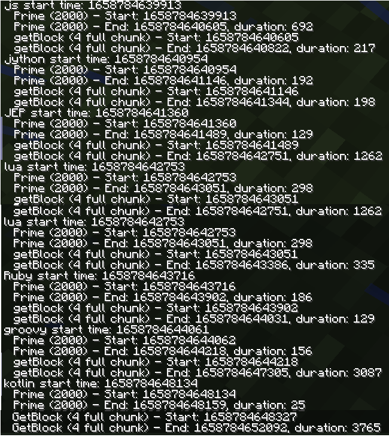

Extensions
Language Extensions
These extensions allow you to code in languages other than JavaScript, and some even have performance benefits.- Jython (python 2.7 support) - Github Download
- JEP (python 3.x support) - Github Download
- Lua (lua 5.2 support) - Github Download
- Ruby (Ruby 2.6.x support) - Github Download
- Groovy (Groovy 4.0.4 support) - Github Download
- Kotlin (Kotlin 1.7.10 support) - Github Download
- WASM/WASI (WasmTime 0.11.0 support) - Github Download
Installation
To install jsmacros extensions, place the jar files in the.minecraft/config/jsMacros/LanguageExtensions/ folder.
Benchmarks
Jython, Lua and Ruby will have a good performance benefit for most tasks.
Plus, their threading scheme for launguage contexts works better, so you can have true async.
JEP/Groovy's good until you try to access a lot of different Java objects.
but jep can be a pain to install, and has threading concerns like js
Kotlin is faster, but is more strongly typed and null-checked, so it may be harder to write valid scripts in.
WASM/WASI is a joke.
have you seen its java interop code.